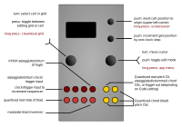

Automatonnetz

Controls
| Control | Function |
|---|---|
| Left encoder (turn) | Select cell in the grid — the 25 cells are accessed sequentially, row-wise. |
| Left encoder (press) | Toggle between editing overall grid settings or current cell settings |
| Left encoder (long) | Clear/reset grid (the results of this action depends on Clr setting) |
| Right encoder (turn) | Navigation mode: move up and down through the menu items. Edit mode: increase or decrease the value being edited. |
| Right encoder (press) | Toggle between menu navigation (selection) mode and value editing mode |
| Right encoder (long press) | App selection menu |
| Up button | Reset current cell position to grid origin (top left-hand corner of grid) |
| Down button | Increment grid position by one clock step |
Grid settings
| Setting | Meaning |
|---|---|
dx |
Amount of movement along x-axis (horizontal) per clock input |
dy |
Amount of movement along y-axis (vertical) per clock input |
Mode |
Musicological mode of root triad, either maj or min |
Oct |
Move outputs up/down in octave steps |
TrDly |
sets the TR1-input-to-processing latency (for details see the Trigger Delay setting in Quantermain below) |
OutA |
Switch output mode of channel A: root outputs root note, trig outputs a trigger whenever the triad output on B, C and D is transformed, arp arpeggiates the current triad, strm (strum) arpeggiates the triad once only as soon as the triad transformation has taken place (tip: very useful with the Mutable Instruments Elements or Rings modules, or Mutable Instruments Braids in “PLUK” mode) |
Clr |
Sets how the grid is cleared on a long-press of the left encoder. zero clears the grid, rT fills with random transforms, rTev sets each cell’s event to randT |
Per-cell settings
| Setting | Meaning |
|---|---|
Trfm |
Determines the transform which is applied when this cell is active; special values are @ (reset) and * (no transform) |
Offs |
Offset in semitones applied while this cell is active |
Inv |
Inversion of the transformed triad |
Muta |
Mutation event that is applied when the cell is left (i.e. on the next clock after the cell’s transform is applied). Valid values are shown in the table below. Note that this setting makes the grid self-modifying as the current cell traverses it! |
Muta setting |
Action |
|---|---|
none |
nothing happens |
rT__ |
The transformation for this cell is set to a random value. |
r_O_ |
The transposition for this cell is set to a random value. |
rTO_ |
The transformation and the transposition for this cell is set to a random value. |
r__I |
The inversion for this cell is set to a random value. |
r_OI |
The transposition and the inversion for this cell is set to a random value. |
rTOI |
The transformation, the transposition and the inversion for this cell is set to a random value. |
Input/output assignment
| I/O | Function |
|---|---|
| TR1 | Clock/trigger input to increment steps in the sequencer |
| TR2 | Arpeggiator clock (if mode is arp or stem) |
| TR3 | |
| TR4 | If high, inhibits arpeggiator clock |
| CV1 | The voltage on this input is quantised to the root note of triad (before transform) - that is, it provides external voltage control of the root note (same as Harrington 1200) |
| CV2 | |
| CV3 | |
| CV4 | Modulate triad inversion (same as Harrington 1200) |
| A | Depending on the OutA setting: pitch CVs for quantised root note, arppegio/strum, or trigger out |
| B, C, D | Pitch CVs for the triad after transformation |
This app uses the neo-Riemannian transformations implemented in the Harrington 1200 app (see above), but with the sequence of transformations determined not through triggers for each type of transformation, but rather by navigating a 5x5 grid of cells. On each clock input the dx (delta x) and dy (delta y) — hence “vector” sequencer — values are added to the current position on the grid to determine the next cell. The position simply wraps around when it reaches the edge of the grid, and “backwards” motion is also possible. The position and movement can also be fractional, allowing for clock divisions and all kinds of patterns.
Each cell of the grid can contain a neo-Riemannian transformation, or a reset, as well as other parameters. In this app, there are three additional transforms available, which can be represented as a combination of the basic three neo-Riemannian transforms:
- S (Slide): LPR, example S(Cmaj) = C#min
- H (Hexatonic): LPL, example H(Cmaj) = A-min
- N (Nebenverwandt): RLP, example N(CMaj) = Fmin
The implementation computes these in a single transform step however, not sequentially.
Screensaver display
Similar to Harrington 1200 app, the current triad (output as pitch CVs on the B, C and D sockets) is shown graphically on a pitch circle on the left. On the right, the last few vector moves are shown as a “snake”. The current output triad is also displayed.
Tips
If you wish to use the vector sequencer to play melodies, then set the TRFM (transform) value for every cell in the grid to * (null transform), and set the Offs value for each cell to a specific note offset from the root note that you want to appear in your sequence. Then, as the current cell is moved around the grid by clock/trigger inputs on TR1, the note defined for that cell will be output on output B (with transpositions of the same note sequence on outputs C and D).